SmartMem: Layout Transformation Elimination and Adaptation for Efficient DNN Execution on Mobile
ASPLOS ’24
gpu
llm
attention
memory
systems
SmartMem
Background & Motivation
DNNs are Moving to Mobile
- Modern DNNs (Transformers, LLMs) are enabling powerful AI on mobile devices.
- On-device inference is crucial for:
- Privacy: User data stays on the device.
- Low latency: No network round-trip.
- Offline functionality: Works without an internet connection.
Data Representation: Tensors and Layouts
- A tensor’s layout defines how its multi-dimensional data is stored in linear memory.
- Common layouts in DNNs:
- NCHW: (Batch, Channels, Height, Width)
- NHWC: (Batch, Height, Width, Channels)
- Different operators have different optimal layouts.
- CPUs often prefer NCHW.
- GPUs often prefer NHWC for better memory access patterns.
The Bottleneck: Layout Transformations
- When a producer operator outputs in one layout (e.g., NCHW) and a consumer operator prefers another (e.g., NHWC), a layout transformation is required.
- DNN operators (e.g., Convolution, Attention) have different input data layout preferences.
- This forces frequent, expensive data reorganization (
Transpose,Reshape) between operators.

Mobile GPU Texture Memory
- Mobile GPUs have specialized 2.5D Texture Memory.
- It is optimized for 2D spatial locality, offering huge advantages over standard 1D buffer memory for certain computations.
- However, operations like
Reshapeare non-trivial and expensive on 2.5D memory because they break spatial relationships.
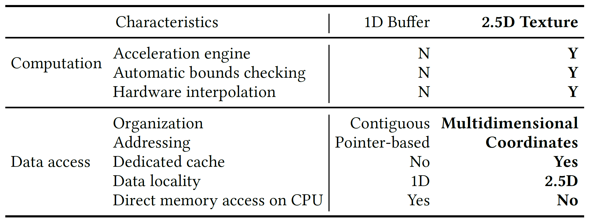
Mobile GPU Texture Memory
- Mobile GPUs have specialized 2.5D Texture Memory.
- It is optimized for 2D spatial locality, offering huge advantages over standard 1D buffer memory for certain computations.
- However, operations like
Reshapeare non-trivial and expensive on 2.5D memory because they break spatial relationships.
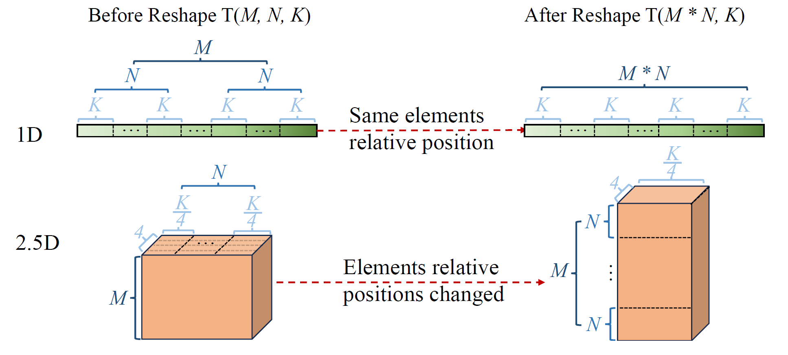
The Cost of Transformations is High
- Modern Transformer models are filled with layout transformations.
- This results in a massive performance bottleneck.
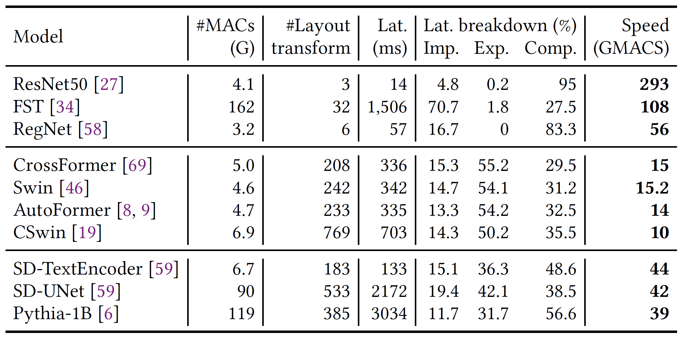
- 43% to 70% of the total execution time are spent on layout transformations.
Observation
Most layout transformations are artifacts of rigid framework design and are unnecessary.
Key Idea: We can eliminate transformations by designing a single, efficient layout that serves multiple, consecutive operators.
The goal is to create a framework that can:
- Systematically identify and eliminate layout transformations.
- Select optimal data layouts for remaining operators.
- Adapt these layouts to the specifics of mobile GPU hardware.
System Design
SmartMem Overview
- A comprehensive framework with three key components:
- Operator Classification
- Categorize operators based on their layout sensitivity and flexibility.
- Layout Transformation Elimination & Selection
- Eliminate unnecessary operators and select optimal layouts for the rest.
- 2.5D Memory Mapping
- Adapt the chosen logical layouts to the physical 2.5D texture memory on mobile GPUs.
Operator Classification
- Operators are classified along two axes:
- Input Layout Dependency (ILD/ILI): Is performance sensitive to input layout?
- Output Layout Flexibility (Variable/Fixed): Can the output layout be customized?
- This creates four categories that guide optimization decisions.
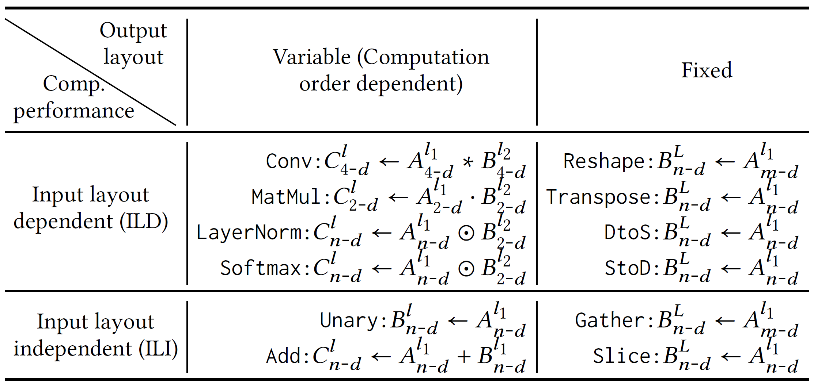
Layout Transformation Elimination
- Pairs of producer-consumer operators are analyzed based on their types.
- Operators with
Fixedoutput (likeReshape,Transpose) are prime candidates for elimination. - Their functionality is fused into the consumer operator.
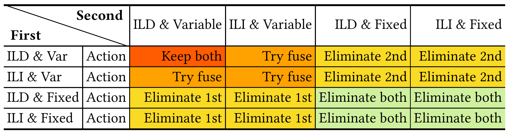
How Elimination Works: Index Transformation
- Instead of physically moving data, memory access indices are transformed.
- A sequence of layout operations is compiled into a simple mathematical formula for calculating addresses.
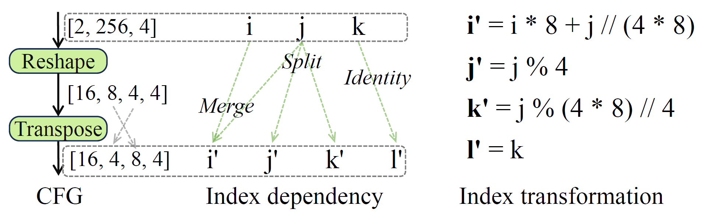
How Layouts are Chosen: Reduction Dimension Heuristic
- Goal: Find the best layout for an edge between two operators.
- Heuristic: The producer generates data in the layout preferred by the consumer.
- This preferred layout is determined by the consumer’s reduction dimension—the dimension where most computation occurs (e.g., the K dimension in MatMul).
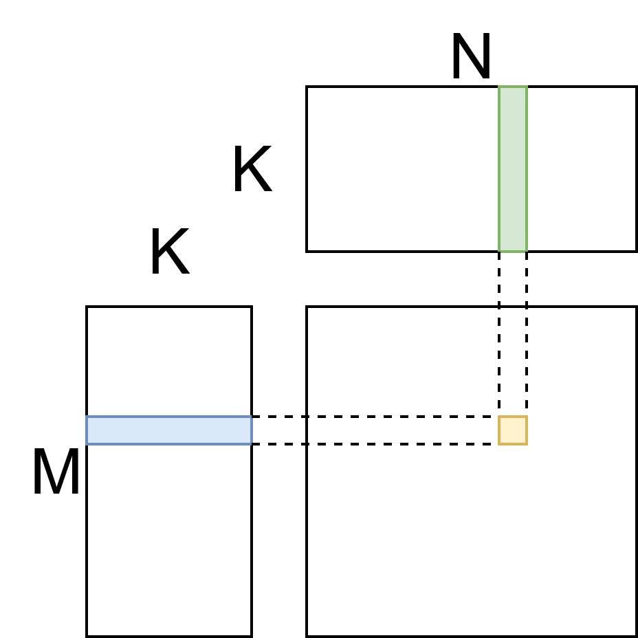
How Layouts are Chosen: Reduction Dimension Heuristic
- Goal: Find the best layout for an edge between two operators.
- Heuristic: The producer generates data in the layout preferred by the consumer.
- This preferred layout is determined by the consumer’s reduction dimension—the dimension where most computation occurs (e.g., the K dimension in MatMul).
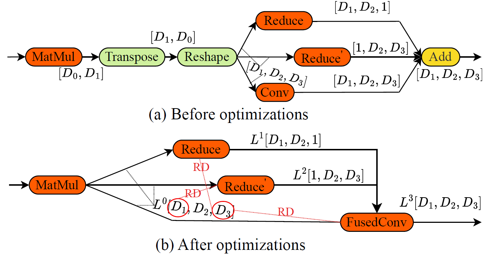
Mapping to 2.5D Texture Memory
- Mobile GPUs have specialized 2.5D texture memory that excels at 2D spatial locality.
- SmartMem intelligently maps a tensor’s logical layout to this physical memory.
- Reduction dimensions are mapped to ensure contiguous access, maximizing hardware efficiency.
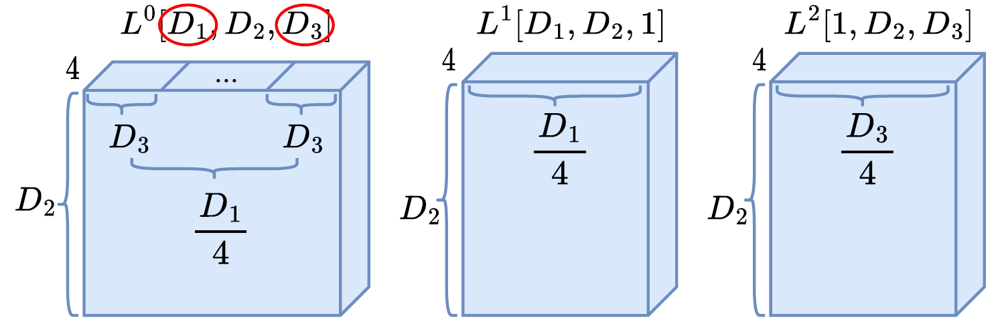
Optimized Data Access
- Before: Fragmented memory access, poor locality.
- After: Coalesced, stride-1 access along key dimensions.
- This dramatically improves cache performance and SIMD efficiency.
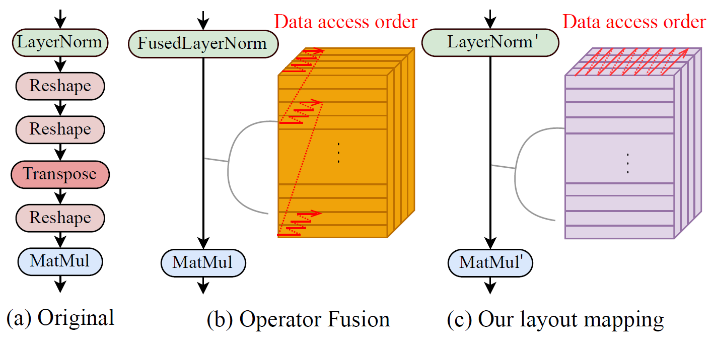
Evaluation
Experimental Setup
- Device: OnePlus phone equipped with Snapdragon 8 Gen 2 SoC with Adreno 740 GPU
- Workloads: 18 diverse and modern DNNs
- Transformers (Swin, ViT), Hybrids (CSwin), CNNs (ConvNext), LLMs (Pythia)
- Baselines:
- MNN, NCNN, TFLite, TVM
- DNNFusion: SOTA fusion framework
End-to-End Latency
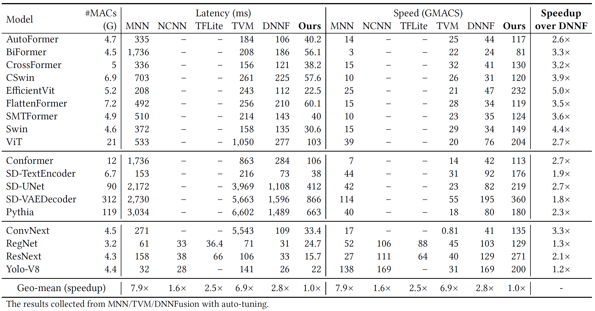
- SmartMem significantly outperforms all baselines.
- 2.8x average speedup over DNNFusion.
- 6.9x over TVM and 7.9x over MNN.
Performance Breakdown
- Layout Transformation Elimination (LTE) provides the largest benefit, especially for Transformers.
- Layout Selection further improves performance by enhancing data locality.
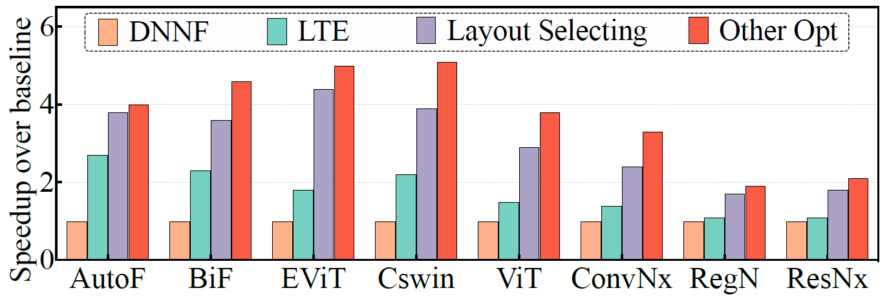
Memory Access
- SmartMem’s design directly translates to better hardware utilization.
- It reduces memory accesses and cache misses.
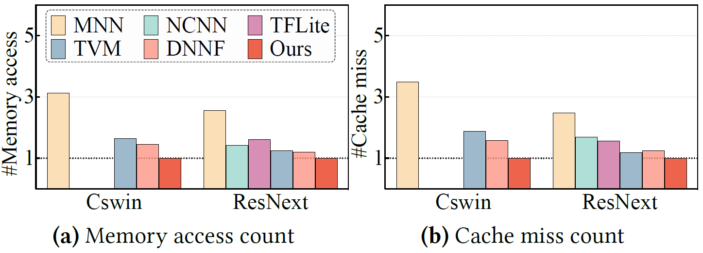
- 1.8x fewer memory accesses & 2.0x fewer cache misses on average.
Portability and Scalability
- The performance benefits hold across different hardware and larger problem sizes.
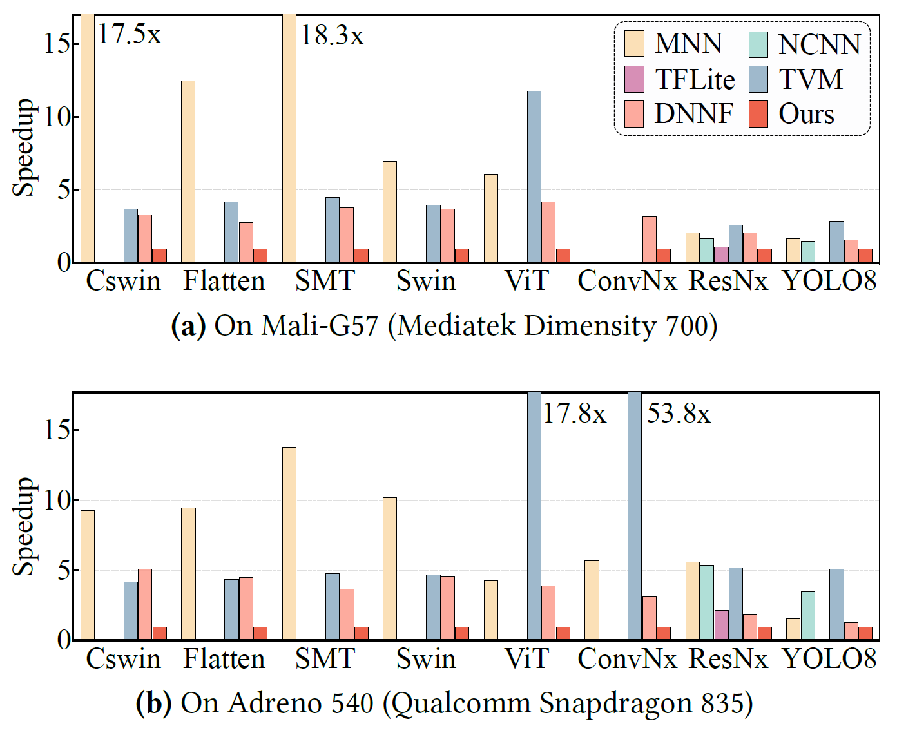
- SmartMem also shows benefits on older mobile platforms and desktop-class GPUs.
Roofline Analysis
- SmartMem effectively utilizes the mobile GPU’s computational power.
- Achieves 24% - 35% of the theoretical peak performance, pushing the limits of the hardware for complex models.
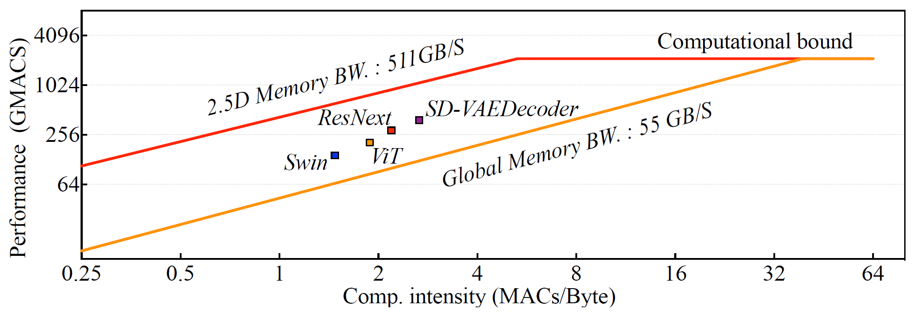